datazines · a sketchbook
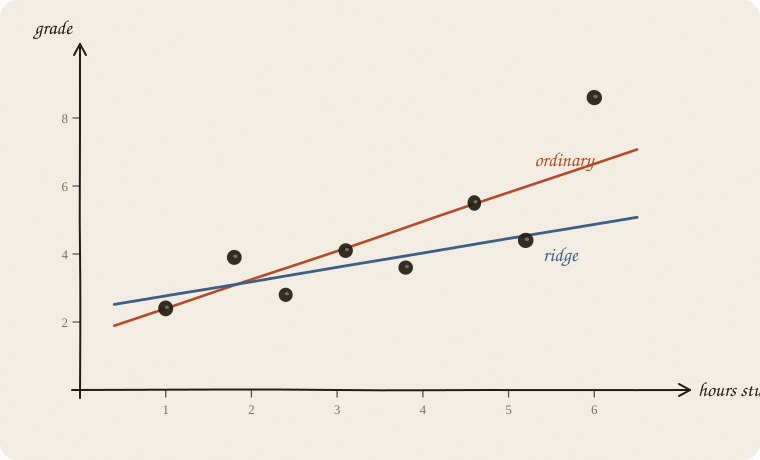
Read 01 linear regression first. This is the sequel: what to do when that line goes feral.
Flip it like a notebook. One page = one idea. Done.
You still have points. You still want a line:
$$\hat y = a + b \cdot x$$
Ordinary linear regression picks a and b by making the residuals as small as possible. Least squares. No extra rules.
That is a great recipe when:
It is a shaky recipe when the line can overreact.
This sketchbook is about that overreaction — and a quiet fix called ridge.
Same story as last time: hours studied, grade.
Only now the cloud is messier. One person in the corner had a weird day.
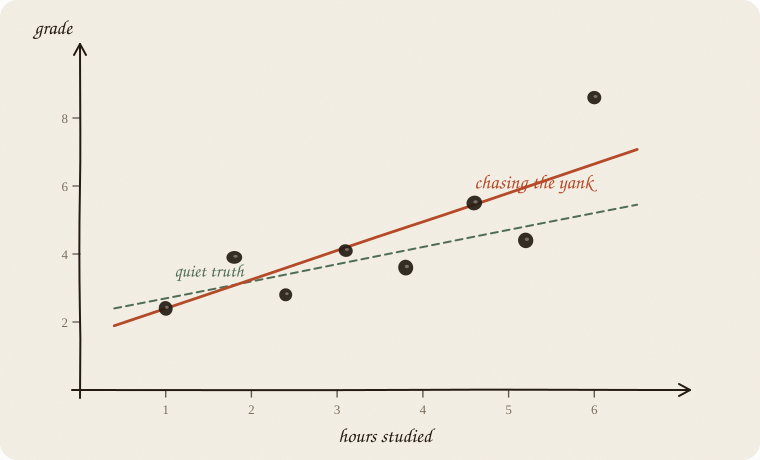
Ordinary least squares must chase that yank. Big misses cost a lot (they get squared). So the line leans hard, just to shave a little error off one point.
On the old points it looks clever.
Clever is not the same as true.
Ridge is not the seatbelt for one wild y. It still squares leftover, so a yank still screams. Ridge’s job is huge slopes: few people, noisy x, or twins that fight. A single corner grade wants a check, or a method that does not square the miss — not λ.
The job is not “look smart on the people you already asked.”
The job is: guess well for the next person.
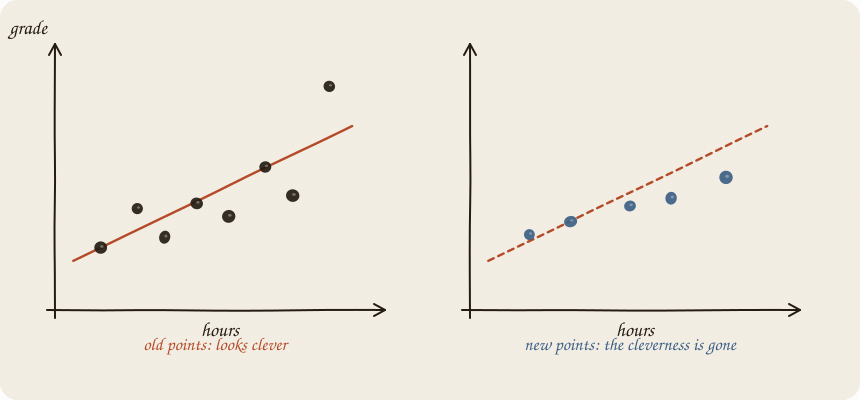
Left: the line hugs the old cloud. Right: new people arrive. The clever tilt is suddenly just… wrong.
This has a name: overfitting.
The line memorized noise and called it a pattern.
On one machine, that is a problem. Later, a forest will grow jumpy trees on purpose and vote — the choir is the tax, not a calmer tree (02 random forest). Not this notebook.
Ridge’s whole personality is: be a little worse on the old points, so you do not embarrass yourself on the new ones.
Worse than one noisy point: two levers that are almost copies.
Hours studied and minutes studied. Same fact, two units.
Ordinary regression can do this:
| lever | ordinary b |
|---|---|
| hours | +48 |
| minutes | −47 |
Net effect ≈ 1. A fight. The math found a cancellation, not a story.
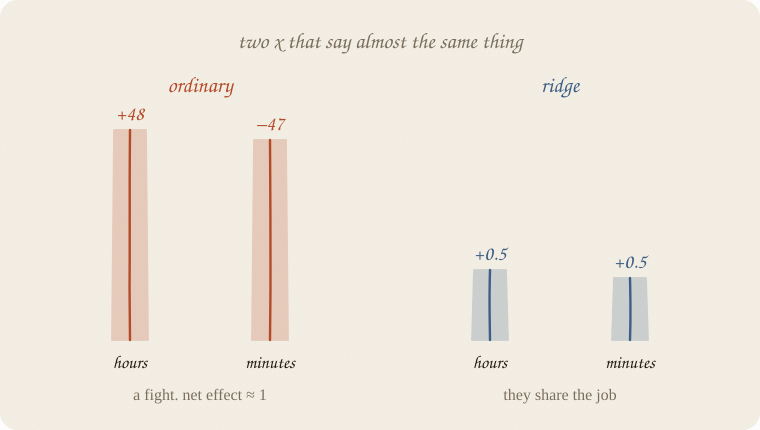
Ridge does not let knobs get theatrical. It asks both to share the job with small numbers.
You still cannot say which of the twins “really” did it. You can stop the explosion.
No magic cutoff (“corr 0.7 → ridge”). The test is the fight: ordinary bs huge and opposite, net effect ordinary. Hours and minutes on page 14 do that. Two honest, different levers with corr 0.5 can be fine.
Ridge does not invent a new kind of curve. Still a straight line. Still ŷ = a + b x.
It changes what “best” means.
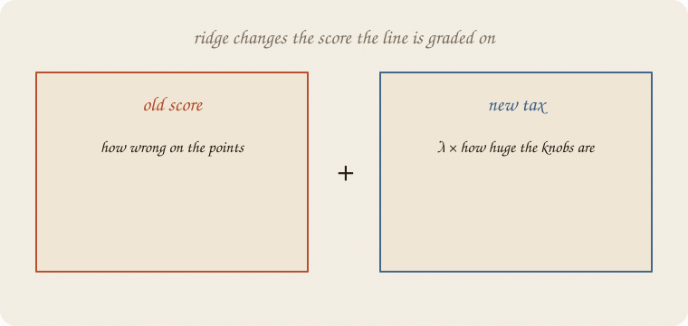
Old score (ordinary):
how wrong am I on the points?
Ridge score:
how wrong am I on the points
+ λ × (how huge the slopes are)
That second piece is a tax. Big b costs extra, even if it helps a little on the old points.
So the computer still rolls downhill. The bowl just got a new slope: “don’t wander far from zero.”
The intercept a usually does not pay the tax. Starting height is allowed. Wild slopes are the problem.
λ (lambda) is not magic. It is how loud the tax is.
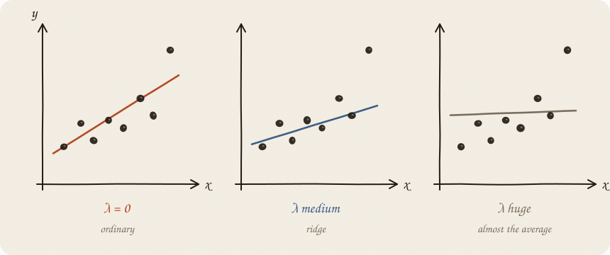
| λ | what happens |
|---|---|
| 0 | tax is off. Ordinary line. Can go feral. |
| medium | slope shrinks. A bit more boring. Usually the point. |
| huge | knobs almost zero. Line ≈ the plain average. Too shy. |
There is no holy number. λ is a choice: how much boring do I want to buy, in exchange for stability?
Ridge’s move is simple to see on the knobs:
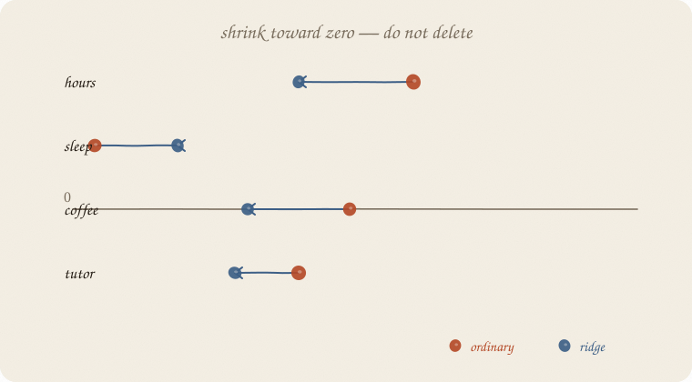
Every b gets pulled toward zero. Not to zero, unless it was already tiny.
Hours still hours. Sleep still sleep. Coffee still in the model — just quieter.
That is the personality difference you will meet later with lasso: lasso is happy to kill a knob. Ridge is not. Ridge keeps everyone in the room and turns the volume down.
Here is the trade, as a dartboard.
Bullseye = the true line, if you could see it.
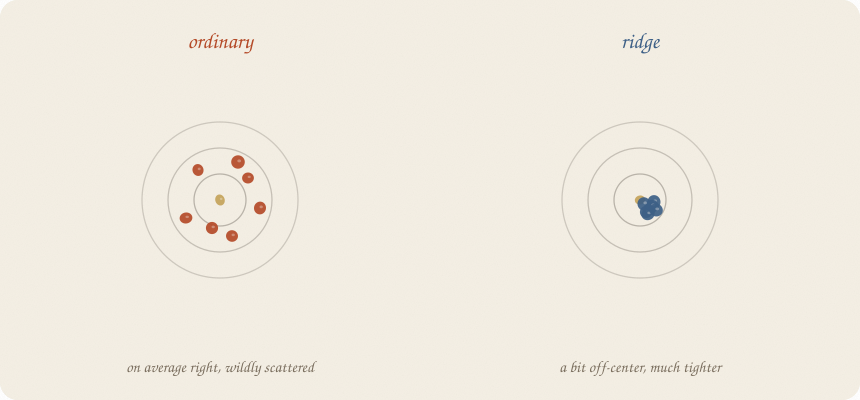
Ordinary: darts average around the center, but they fly everywhere. Ask 8 new people, get 8 different wild lines.
Ridge: darts sit a little off-center (a small, systematic “hmm, too shy”) — and they cluster.
A name for this, if you want one:
Ridge buys lower variance with a little bias. For prediction, that deal is often excellent.
You are not trying to be unbiased and heroic. You are trying not to flail. The dartboard as its own notebook: 02 bias variance.
One more way to see it, if two knobs b₁ and b₂ are on the page.
Ordinary “best” is some point far out, where the residual-error rings are smallest.
Ridge says: you may only pick a point inside a circle around zero.
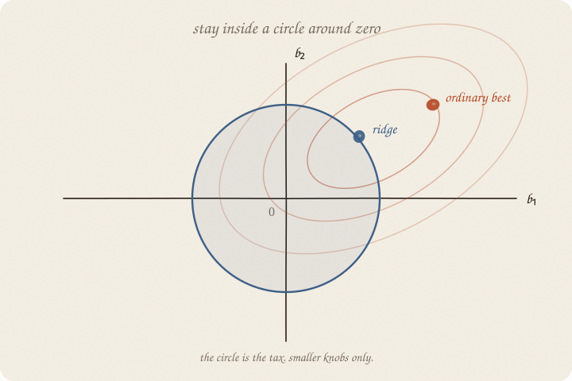
The best allowed point is where an error-ring just kisses the circle.
Bigger λ → smaller circle → smaller knobs.
λ = 0: the circle is the whole page. You sit at ordinary’s point. λ huge: the circle is a dot at the origin. Knobs ≈ 0. The line is the plain average.
Same idea as the tax. Just drawn as a fence.
Ridge punishes big numbers.
Hours studied live around 1–6.
Minutes studied live around 60–360.
Same fact. Different spelling. The tax treats them differently unless you fix the spelling first.
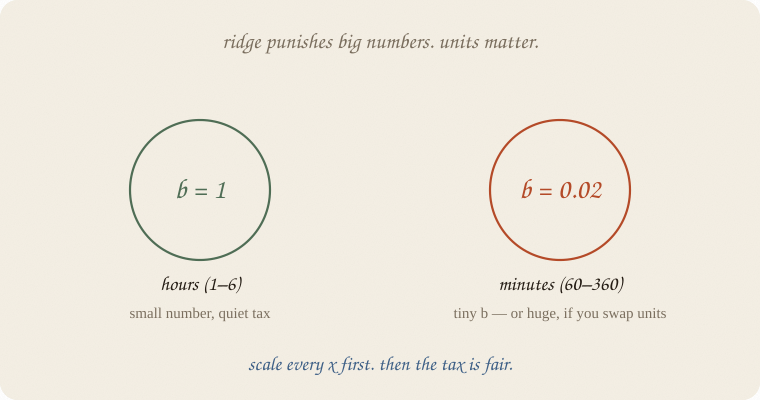
Recipe, boring and important:
Now every knob is in “how many typical steps away from average.” The tax is fair.
Ordinary least squares with one x does not need this. Ridge does. Always scale.
Do not pick λ because it looks pretty on the old cloud. The old cloud is the thing you are trying not to overfit.
Hide some people. Fit on the rest. Score the hidden ones. Repeat. Average the pain.
Three piles: hide pile 1, fit 2+3. Then hide 2. Then hide 3. Three pains, one average. That ritual is cross-validation. Fancy name, simple idea: grade the line on people it has not seen.
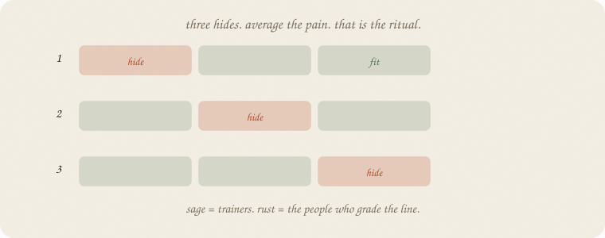
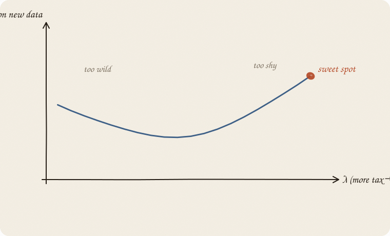
The curve of “error on new data” is usually a U:
You do not need the formula. You need the habit: tune on held-out pain, not on pride. The ritual as its own notebook: 01 train test validate.
Same family. Different fence.
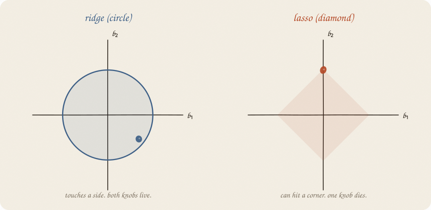
| ridge | lasso | |
|---|---|---|
| fence | circle | diamond |
| knobs | shrink, all stay | some can hit exactly zero |
| good at | many small, correlated x | picking a few x and ignoring the rest |
| personality | “everyone quieter” | “some people leave the room” |
If two x are twins, ridge lets them share.
Lasso tends to keep one and fire the other.
Lasso is a sibling, not the same kid: 03 lasso.
If you want both gifts (share and fire junk): 04 elastic-net.
If you want the film of knobs walking in: 05 LARS.
If you keep only one thing:
ordinary line + a tax on huge b → a calmer line for the next person. a does not pay.
Thirty students — few enough that the ordinary line can overreact. Grade from hours, sleep, tutor. Minutes is hours in another unit (a twin). Coffee and noise are junk.
Both machines get the same scaler. Scale does not change ordinary’s guesses — only how you read the knobs. Then ridge adds the tax. The test-R² jump is that tax, not the spelling.
import numpy as np
from sklearn.linear_model import LinearRegression, Ridge
from sklearn.model_selection import train_test_split
from sklearn.pipeline import make_pipeline
from sklearn.preprocessing import StandardScaler
rng = np.random.default_rng(7)
n = 30
hours = rng.uniform(1, 6, n)
sleep = rng.uniform(4, 9, n)
tutor = (rng.random(n) > 0.6).astype(float)
coffee = rng.uniform(0, 4, n)
noise = rng.normal(0, 1, n)
minutes = hours * 60 + rng.normal(0, 3, n)
naps = sleep + rng.normal(0, 0.25, n)
grade = 1.8 + 0.9 * hours + 0.35 * sleep + 0.6 * tutor + rng.normal(0, 0.55, n)
X = np.column_stack([hours, minutes, sleep, naps, tutor, coffee, noise])
names = ["hours", "minutes", "sleep", "naps", "tutor", "coffee", "noise"]
Xtr, Xte, ytr, yte = train_test_split(X, grade, test_size=0.3, random_state=0)
ols = make_pipeline(StandardScaler(), LinearRegression()).fit(Xtr, ytr)
ridge = make_pipeline(StandardScaler(), Ridge(alpha=10)).fit(Xtr, ytr)
print("mean grade (train)", round(ytr.mean(), 3))
def show(title, model, step):
est = model.named_steps[step]
print(title)
print(f" intercept {est.intercept_:7.3f}")
for name, b in zip(names, est.coef_):
print(f" {name:10s} {b:7.3f}")
print(f"R² train {model.score(Xtr, ytr):.3f} R² test {model.score(Xte, yte):.3f}\n")
show("ordinary (scaled, no tax)", ols, "linearregression")
show("ridge (scaled, alpha=10)", ridge, "ridge")
mean grade (train) 7.241
ordinary (scaled, no tax)
intercept 7.241
hours 8.354
minutes -6.970
sleep -0.330
naps 0.675
tutor 0.376
coffee 0.137
noise 0.072
R² train 0.955 R² test 0.626
ridge (scaled, alpha=10)
intercept 7.241
hours 0.564
minutes 0.555
sleep 0.124
naps 0.136
tutor 0.318
coffee 0.122
noise 0.094
R² train 0.907 R² test 0.748
Same spelling. Ordinary still fights: hours +8.35, minutes −6.97. Cancellation, not a story. Train R² 0.955, test 0.626. Pride on the old 21, embarrassment on the new 9.
(Unscaled ordinary makes the same guesses. R² does not move. The tiny minutes b was just the fight written in minutes.)
Ridge, same scale: hours 0.56, minutes 0.56. Twins share. Train R² 0.907 — a bit worse (the tax). Test R² 0.748 — better on people it has not seen. That jump is λ, not the scaler. Do not pick the method by train R².
Both intercepts 7.241 — the mean grade on the trainers. After StandardScaler, every x is 0 at the average person, so ŷ at “all knobs typical” is ȳ. Page 5: a does not pay. Zero moved.
alpha here is λ. sklearn’s name, same volume knob.
| symbol | meaning |
|---|---|
| ŷ = a + b x | still the line |
| ordinary | smallest sum of (residuals)² |
| ridge | that, plus λ × (bs)². intercept a does not pay |
| λ | volume of the tax. 0 = ordinary |
| shrink | knobs pulled toward 0, not deleted |
| scale | make every x comparable first; then a is ȳ, not “all x = 0” |
| bias | a bit systematically off |
| variance | how much the line jumps |
Also called (in a room):
| here | there |
|---|---|
| tax | L2 penalty / regularization |
| knobs | weights |
| λ | alpha in sklearn |
Ridge does not fix a bent cloud. If the truth curves, you still need a different shape.
Ridge does fix a drama queen of a straight line.
Reach for it when
Skip it when
Pays you: calmer knobs. Twins share. Prediction on new people usually less embarrassed.
Costs you: every knob stays, even junk. A bit of shyness (bias). You must scale, and you must pick λ.
Sequel to the linear sketchbook. Same notebook, tighter belt. Next: 03 lasso.
Flip it like a notebook. One page = one idea.